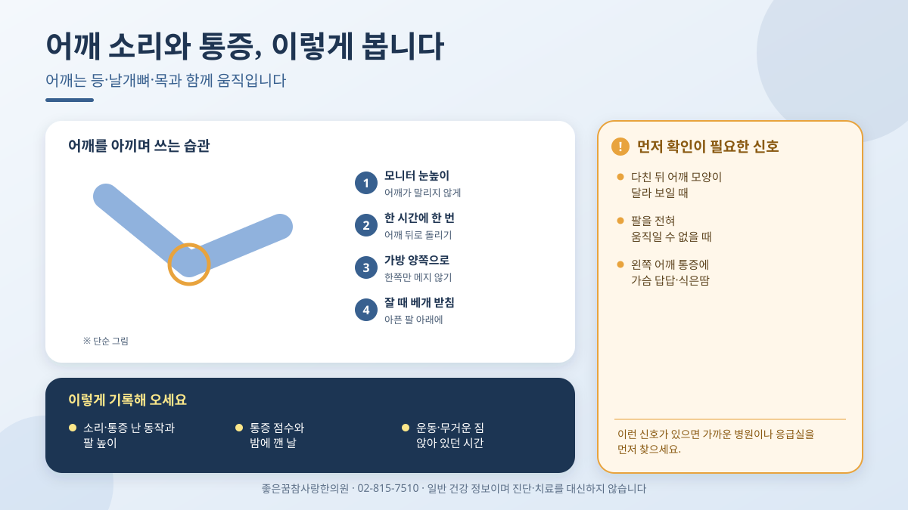

이종호 한의사 감수좋은꿈참사랑한의원 대표원장 (한의사 면허번호 19769)발행 2026-11-26 · 수정 2026-11-26
이 글의 차례
선반 위 상자를 내리려고 팔을 번쩍 드는 순간, 어깨 안쪽에서 '뚝' 하는 소리와 함께 찌릿한 느낌이 지나갑니다. 그 뒤로는 팔을 돌릴 때마다 소리가 나는 것 같고, 어깨를 쓰는 동작마다 조심스러워집니다. 혹시 어깨 안에서 무언가 어긋난 건 아닐까 걱정이 듭니다.
진료실에서 어깨 소리를 이야기하시는 분들은 대개 두 부류입니다. 소리만 나고 아프지는 않은데 마음이 쓰이는 분, 그리고 소리와 함께 통증이 따라와 팔을 들기가 불편해진 분입니다. 두 경우는 살피는 방향이 조금 다릅니다.
어깨는 우리 몸에서 가장 넓게 움직이는 관절입니다. 팔을 앞으로, 옆으로, 뒤로, 돌려서까지 쓸 수 있는 대신 그만큼 주변 힘줄과 근육의 균형에 많이 기대고 있습니다. 그 균형이 흐트러지면 소리와 통증이 함께 나타나기 쉽습니다.
이 글에서는 어깨 소리가 왜 나는지, 어떤 소리를 살펴봐야 하는지, 비슷한 다른 어깨 불편과 어떻게 다른지, 집에서 무엇을 해 볼 수 있는지를 차례로 풀어 보겠습니다.
어깨에서 나는 소리는 어디서 나나요?
어깨에서 소리가 난다고 하실 때, 실제로 소리가 나는 자리는 여러 곳일 수 있습니다. 팔뼈와 어깨뼈가 만나는 어깨 관절 자체, 그 위를 덮는 힘줄과 주머니, 쇄골 끝이 만나는 자리, 그리고 등 뒤의 날개뼈 주변이 대표적입니다.
어깨 관절 안쪽에서 나는 소리는 팔을 크게 돌리거나 들어 올릴 때 '뚝' 또는 '딸깍' 하고 나는 경우가 많습니다. 관절 안의 압력이 바뀌거나, 힘줄이 뼈의 튀어나온 부분을 넘어가면서 나기도 합니다. 아프지 않다면 흔한 소리입니다.
어깨 위쪽, 쇄골 끝 부근에서 나는 소리는 팔을 몸 앞으로 가로질러 당기거나 머리 위로 들 때 잘 납니다. 이 자리는 무거운 것을 자주 들거나 팔굽혀펴기 같은 운동을 많이 하는 분에게서 불편이 생기기 쉽습니다.
등 뒤 날개뼈 쪽에서 '드드득' 하는 소리가 난다면 어깨 관절보다는 날개뼈와 갈비뼈 사이에서 나는 소리일 수 있습니다. 이 경우는 탄발 견갑이라고 따로 나눠 보는데, 소리가 나는 위치를 손으로 짚어 보면 구분에 도움이 됩니다.
왜 어깨에서 소리와 통증이 함께 올까요
어깨 관절은 공처럼 둥근 팔뼈 머리가 얕은 접시 같은 어깨뼈 위에 올라앉은 모양입니다. 이 공이 접시 위에서 미끄러지지 않도록 붙잡아 주는 것이 어깨를 감싼 작은 힘줄들, 흔히 회전근개라고 부르는 근육과 힘줄입니다.
오래 앉아 등이 굽은 자세로 지내거나, 한쪽 팔만 많이 쓰거나, 갑자기 무거운 것을 드는 일이 반복되면 이 힘줄들의 균형이 흐트러질 수 있습니다. 그러면 팔을 들 때 팔뼈 머리가 정해진 자리보다 조금 위로 떠오르며 주변 조직과 부딪히고, 소리와 통증이 함께 나타나기 쉽습니다.
날개뼈의 움직임도 중요합니다. 팔을 들어 올릴 때 날개뼈가 함께 부드럽게 돌아가야 어깨 관절에 여유가 생기는데, 등 근육이 굳거나 약하면 날개뼈가 제때 따라 돌지 못합니다. 그러면 어깨 관절이 혼자 무리하게 되고, 특정 각도에서 걸리는 느낌과 소리가 날 수 있습니다.
어깨가 한 번 빠졌던 적이 있거나 관절 주변 테두리 연골이 다친 경우에는, 팔을 특정 방향으로 돌릴 때 '딸깍' 하는 소리와 함께 빠질 것 같은 불안한 느낌이 들기도 합니다. 이런 경우에는 정형외과에서 영상 검사를 함께 받아 보시는 것이 좋습니다.
아프지 않은 소리와 살펴볼 소리는 어떻게 다른가요?
소리 자체보다 함께 따라오는 것을 보시면 됩니다. 아래 가운데 어디에 가까운지 떠올려 보세요.
- 가끔 '뚝' 소리가 나지만 아프지 않고 팔도 잘 올라가는 경우
- 소리와 함께 팔을 어느 높이까지 들 때만 찌릿한 경우
- 밤에 아픈 쪽으로 누우면 어깨가 욱신거리는 경우
- 팔을 들 때 힘이 빠지거나 끝까지 올라가지 않는 경우
- 소리와 함께 어깨가 빠질 것 같은 불안한 느낌이 드는 경우
첫 번째는 생활 관리를 하며 지켜볼 수 있는 경우가 많습니다. 두 번째부터는 어깨 힘줄이나 주머니에 무리가 가고 있을 수 있어서 진찰을 받아 보시길 권합니다.
팔을 옆으로 들어 올릴 때 어깨 높이 부근에서만 아프고 그보다 위나 아래에서는 덜 아프다면, 힘줄이 뼈 아래에서 끼이는 충돌증후군을 함께 생각합니다. 팔을 들기는 하는데 힘이 빠지고 내릴 때 툭 떨어지는 느낌이 든다면 힘줄 손상을 함께 살펴야 합니다.
비슷해 보이지만 다른 어깨 불편
오십견은 어깨가 여러 방향으로 굳어 팔이 잘 올라가지 않는 것이 핵심입니다. 소리보다 움직일 수 있는 범위가 줄어드는 것이 먼저 눈에 띄고, 남이 들어 올려 줘도 잘 올라가지 않는 경우가 많습니다.
석회성 힘줄염은 힘줄에 석회가 쌓여 갑자기 심한 통증이 오는 경우가 있습니다. 밤에 잠을 못 이룰 만큼 아프다가 서서히 가라앉기도 해서, 소리보다 통증의 세기와 흐름이 특징입니다.
목에서 시작된 불편이 어깨로 내려오는 경우도 있습니다. 어깨를 움직일 때보다 고개를 돌리거나 젖힐 때 어깨와 팔이 저리다면 목을 함께 살펴야 합니다. 그래서 어깨 소리로 오셔도 목의 움직임을 꼭 함께 확인합니다.
일과 운동에 따라 달라지는 어깨 부담
책상 앞에서 오래 일하는 분은 어깨가 앞으로 말리고 등이 굽기 쉽습니다. 이 자세가 길어지면 어깨 앞쪽 공간이 좁아져 팔을 들 때 힘줄이 끼이기 쉬워집니다. 그래서 사무직이신 분은 어깨보다 등과 가슴의 자세를 먼저 살피는 경우가 많습니다.
미용, 요리, 청소, 물류처럼 팔을 들고 반복해서 쓰는 일을 하시는 분은 같은 힘줄을 하루 종일 쓰게 됩니다. 쉬는 시간에 팔을 내려 흔들어 주고, 가능하다면 작업대 높이를 조절해 팔을 덜 들도록 바꾸는 것만으로도 부담이 줄 수 있습니다.
헬스, 수영, 테니스, 배드민턴, 골프처럼 팔을 크게 쓰는 운동을 즐기시는 분은 운동량이 갑자기 늘었을 때 어깨 불편이 생기기 쉽습니다. 운동 전에 어깨와 등을 충분히 풀어 주고, 무게나 횟수는 몇 주에 걸쳐 천천히 늘려 가시길 권합니다.
아이를 안고 지내는 부모님, 손주를 돌보시는 어르신도 어깨를 많이 씁니다. 아이를 한쪽 팔로만 안거나 허리를 숙인 채 들어 올리는 일이 반복되면 어깨와 등이 함께 지칩니다. 양팔을 번갈아 쓰고, 아이를 들 때는 몸 가까이 붙여 드시는 것이 좋습니다.
먼저 이렇게 여쭙니다
어깨 소리와 통증으로 오시면 저는 대략 이런 순서로 여쭙니다. 정확히 기억나지 않는 부분은 떠오르는 대로 말씀해 주셔도 괜찮습니다.
- 소리와 통증은 언제부터, 어떤 계기로 시작됐나요?
- 팔을 어느 방향으로 들 때 가장 아프고 소리가 나나요?
- 밤에 아픈 쪽으로 누우면 깨시나요?
- 일이나 운동에서 팔을 머리 위로 드는 동작이 많나요?
- 예전에 어깨가 빠지거나 넘어져 다친 적이 있나요?
- 다른 병원에서 받은 검사나 주사, 약이 있나요?
소리가 나는 동작을 진료실에서 직접 보여 주시면 가장 정확합니다. 머리 빗는 동작, 등 뒤로 손을 넣는 동작, 선반에 물건을 올리는 동작처럼 일상에서 불편한 동작을 천천히 해 보며 함께 확인합니다.
집에서 해 볼 수 있는 간단한 확인
거울 앞에 서서 아래 동작을 천천히 해 보세요. 아프면 바로 멈추시고, 억지로 끝까지 올리지 않으셔도 됩니다.
- 양팔을 앞으로 나란히 들어 머리 위까지 올려 보기
- 양팔을 옆으로 벌려 머리 위까지 올려 보기
- 손등을 허리 뒤에 대고 등 위로 얼마나 올라가는지 보기
- 손바닥을 뒤통수에 대고 팔꿈치를 뒤로 벌려 보기
양쪽 어깨를 번갈아 비교해 어느 동작에서, 어느 높이에서 소리와 통증이 나는지 적어 두세요. 아픈 쪽 어깨가 반대쪽보다 먼저 들썩 올라간다면 날개뼈와 등 근육의 움직임도 함께 봐야 합니다.
일상에서 먼저 해 볼 수 있는 것
통증이 심하지 않다면 어깨를 아끼면서도 굳지 않게 쓰는 것이 중요합니다. 아래 가운데 할 수 있는 것부터 시작해 보세요.
- 모니터는 눈높이에, 키보드와 마우스는 팔꿈치 높이에 맞추기
- 한 시간에 한 번 일어나 어깨를 뒤로 크게 돌리기 다섯 번
- 무거운 가방은 한쪽 어깨 대신 양쪽으로 나눠 메기
- 높은 곳의 물건은 발판을 딛고 몸 가까이에서 내리기
- 잘 때는 아픈 쪽 팔 아래에 베개를 받쳐 두기
등을 펴는 것만으로도 어깨가 움직일 여유가 생깁니다. 의자에 앉아 가슴을 살짝 펴고 날개뼈를 등 가운데로 모았다 푸는 동작을 하루 몇 번 해 보세요. 어깨를 귀 쪽으로 으쓱 올리는 대신 아래로 내리는 느낌으로 하시면 됩니다.
아프다고 팔을 전혀 쓰지 않으면 어깨는 오히려 더 굳기 쉽습니다. 통증이 없는 범위 안에서 팔을 천천히 앞뒤로 흔드는 진자 운동처럼 가벼운 움직임을 이어 가 주세요. 아픈 각도까지 억지로 밀어붙이는 것은 피하시는 것이 좋습니다.
피하면 좋은 습관
어깨가 불편한 시기에는 평소 무심코 하던 동작이 부담이 되기도 합니다. 아래 습관이 있는지 한번 돌아봐 주세요.
소리가 날 때 일부러 어깨를 크게 돌려 소리를 내는 분이 계십니다. 시원한 느낌이 들 수 있지만, 통증과 함께 나는 소리라면 같은 동작을 반복할수록 힘줄에 부담이 될 수 있어 권하지 않습니다.
헬스장에서 무거운 무게로 머리 위로 드는 운동이나, 팔을 뒤로 깊게 젖히는 운동은 어깨가 불편한 동안 잠시 줄여 주세요. 운동을 이어 가고 싶다면 무게를 낮추고 아프지 않은 범위에서만 움직이시는 것이 좋습니다.
엎드려 자거나 팔을 머리 위로 올린 채 자는 습관도 어깨 앞쪽에 부담을 줍니다. 옆으로 누우신다면 아프지 않은 쪽으로 누워 아픈 팔을 베개 위에 올려 두시면 한결 편합니다.
한의원에서 함께 살필 수 있는 경우
- 팔을 들 때 특정 높이에서 소리와 함께 찌릿한 경우
- 밤에 아픈 쪽으로 누우면 어깨가 욱신거리는 경우
- 오래 앉아 일한 뒤 어깨와 등이 함께 굳는 경우
- 운동이나 반복 작업 뒤 어깨 앞쪽이나 옆쪽이 아픈 경우
- 어깨와 함께 목, 날개뼈 주변까지 뻐근한 경우
좋은꿈참사랑한의원에서는 진찰한 내용을 바탕으로 생활에서 바꿔 볼 것과 함께 침 치료, 추나요법, 체외충격파 가운데 지금 상태에 맞는 것을 정합니다. 필요하다고 판단되면 초음파로 힘줄 상태를 확인하고, 초음파를 보며 약침 위치를 정하기도 합니다.
팔에 힘이 빠지거나 어깨가 빠질 것 같은 느낌이 이어진다면 정형외과에서 영상 검사를 함께 받아 보시길 권합니다. 다른 병원에서 받은 약이 있다면 알려 주시고, 처방받은 약은 상의 없이 멈추지 않습니다.
이렇게 기록해 오시면 상담이 쉬워집니다
어깨 소리와 통증은 하루 중에도 달라집니다. 1~2주 정도만 간단히 적어 보세요.
- 소리와 통증이 난 동작, 그때의 팔 높이
- 통증 정도를 0~10점으로
- 밤에 어깨 때문에 깬 날
- 그날 한 일이나 운동, 무거운 것을 든 일
- 오래 앉아 있었던 시간
소리가 나는 동작을 휴대폰으로 앞과 뒤에서 짧게 찍어 오셔도 좋습니다. 어깨와 날개뼈가 함께 움직이는 모습을 보면 어디서부터 살필지 훨씬 분명해집니다.
어깨는 등과 목이 함께 움직입니다
어깨 소리와 통증은 어깨 한 곳의 문제처럼 보이지만, 등의 자세와 날개뼈의 움직임, 목의 상태가 함께 엮여 있는 경우가 많습니다. 그래서 어깨만 주무르기보다 하루의 자세를 함께 돌아보는 것이 도움이 됩니다.
이번 주에는 한 시간에 한 번 일어나 어깨를 뒤로 크게 돌리는 습관 하나만 시작해 보세요. 다음에 오실 때 불편한 동작을 직접 보여 주시면, 그 동작부터 함께 살펴보겠습니다. 소리가 날 때마다 불안하셨다면 그 마음도 함께 들려주세요. 무엇이 소리를 만드는지 알고 나면, 어깨를 쓰는 일이 한결 덜 두려워집니다.
이런 증상은 먼저 확인이 필요합니다
- 넘어지거나 부딪힌 뒤 어깨 모양이 달라 보이고 팔을 전혀 움직일 수 없는 경우
- 왼쪽 어깨나 팔의 통증이 가슴 답답함, 식은땀, 숨참과 함께 오는 경우
이런 신호가 있으면 한의원보다 가까운 병원이나 응급실을 먼저 찾으세요.
함께 읽으면 좋은 글
- 어깨를 돌릴 때 날개뼈에서 딸깍, 드드득 소리가 나는 탄발 견갑은 어떻게 살피나요?
- 팔을 들 때 어깨가 걸리듯 아픈 충돌증후군·회전근개 문제는 어떻게 살피나요?
- 어깨가 한 번 빠진 뒤 자꾸 빠질 것 같고 불안할 때, 어깨 불안정은 어떻게 살피나요?
- 어깨가 굳어 팔이 올라가지 않는 오십견(유착성 관절낭염)은 어떻게 살피나요?
- 어깨가 아플 때 초음파로 무엇을 확인하고, 어떤 동작을 먼저 묻나요?

여쭙는 것
- 소리와 통증은 언제부터, 어떤 계기로 시작됐나요?
- 팔을 어느 방향으로 들 때 가장 아프고 소리가 나나요?
- 밤에 아픈 쪽으로 누우면 깨시나요?
생활에서 해 볼 것
- 모니터는 눈높이에, 키보드와 마우스는 팔꿈치 높이에 맞추기
- 한 시간에 한 번 일어나 어깨를 뒤로 크게 돌리기 다섯 번
- 무거운 가방은 한쪽 어깨 대신 양쪽으로 나눠 메기
한의원에서 함께 살필 것
- 팔을 들 때 특정 높이에서 소리와 함께 찌릿한 경우
- 밤에 아픈 쪽으로 누우면 어깨가 욱신거리는 경우
- 오래 앉아 일한 뒤 어깨와 등이 함께 굳는 경우
먼저 확인이 필요한 신호
- 넘어지거나 부딪힌 뒤 어깨 모양이 달라 보이고 팔을 전혀 움직일 수 없는 경우
- 왼쪽 어깨나 팔의 통증이 가슴 답답함, 식은땀, 숨참과 함께 오는 경우
한눈에 보는 표
| 구분 | 핵심 |
|---|---|
| 여쭙는 것 | 소리와 통증은 언제부터, 어떤 계기로 시작됐나요? 팔을 어느 방향으로 들 때 가장 아프고 소리가 나나요? |
| 생활에서 해 볼 것 | 모니터는 눈높이에, 키보드와 마우스는 팔꿈치 높이에 맞추기 한 시간에 한 번 일어나 어깨를 뒤로 크게 돌리기 다섯 번 |
| 한의원에서 함께 살필 것 | 팔을 들 때 특정 높이에서 소리와 함께 찌릿한 경우 밤에 아픈 쪽으로 누우면 어깨가 욱신거리는 경우 |
| 먼저 확인이 필요한 신호 | 넘어지거나 부딪힌 뒤 어깨 모양이 달라 보이고 팔을 전혀 움직일 수 없는 경우 왼쪽 어깨나 팔의 통증이 가슴 답답함, 식은땀, 숨참과 함께 오는 경우 |
자주 묻는 질문
어깨에서 소리만 나고 아프지 않으면 괜찮은가요?
아프지 않고 팔도 잘 올라간다면 흔한 소리인 경우가 많습니다. 소리와 함께 통증이나 걸리는 느낌, 힘 빠짐이 새로 생기면 그때 진찰을 받아 보세요.
어깨가 아픈데 운동을 쉬어야 하나요?
머리 위로 무겁게 드는 운동은 잠시 줄이시는 것이 좋습니다. 아프지 않은 범위의 가벼운 움직임은 이어 가셔야 어깨가 굳지 않습니다.
날개뼈에서 나는 소리와 어깨 소리는 다른가요?
소리가 나는 자리가 다릅니다. 등 뒤 날개뼈 쪽에서 드드득 하는 소리라면 날개뼈와 갈비뼈 사이에서 나는 경우가 많아 따로 살핍니다.
초음파 검사를 꼭 해야 하나요?
아닙니다. 손으로 진찰한 뒤 힘줄 상태를 더 확인할 필요가 있다고 판단될 때 초음파를 함께 봅니다.
어깨가 아플 때 찜질은 어떻게 하나요?
다친 직후 붓고 뜨겁다면 짧게 차갑게, 오래된 뻐근함이라면 따뜻하게 하시는 경우가 많습니다. 어느 쪽이 편한지 기록해 두시면 진료 때 참고가 됩니다.
좋은꿈참사랑한의원은 재진 때 지난번 이야기부터 이어서 여쭙니다. 진료시간과 예약은 오시는 길에서 확인하세요.
어디서 상담받을 수 있나요?
좋은꿈참사랑한의원은 서울 동작구 만양로2길 2 신성빌딩 3층·5층(서울 동작구 상도동, 7호선 상도역 3번 출구 근처)에 있습니다. 한의사 3명(이종호 대표원장, 조영기 수석진료원장, 정원영 진료원장)이 진료합니다. 진료시간은 평일 09:30~20:00(점심 13:00~14:00), 토·일·공휴일 09:30~15:00이며, 방문 전 전화로 확인을 권합니다. 예약은 네이버 예약, 카카오톡 상담, 전화 02-815-7510로 받습니다.
이 글은 일반적인 건강 정보이며 개인의 진단이나 치료를 대신하지 않습니다. 증상이 있거나 복용 중인 약이 있다면 진료를 통해 확인하세요. 치료 효과는 개인마다 다를 수 있습니다.
작성 기준: 일반적으로 알려져 있는 건강 정보를 참고해 정리했습니다(대표원장 감수). 증상 기록은 1~2주 동안 하루 1회, 비슷한 시간에 적어 오시면 지난 상태와 비교하기 쉽습니다.